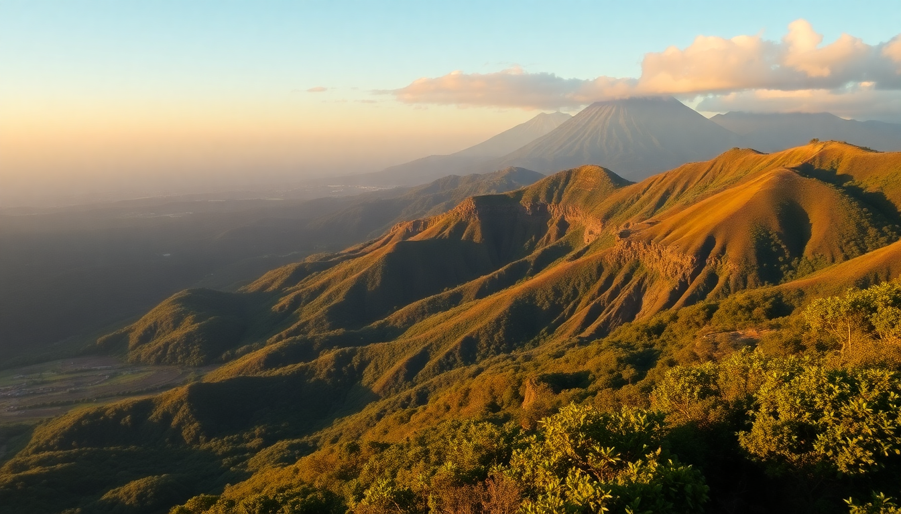

Best Day Trips from San José: Poás, La Paz & Braulio Carrillo

I spent a week based in San José and needed a single day trip that packed serious nature without an overnight stay. The Poás Volcano–La Paz Waterfall–Braulio Carrillo loop delivered. It’s one efficient route—about 8 hours total with stops—that takes you from an active crater to a misty waterfall complex to a dense cloud forest. Here’s exactly how we did it, what to skip, and where your money is best spent.
Why do Poás Volcano, La Paz Waterfall, and Braulio Carrillo as one day trip?
The three attractions sit along the same road—Route 126—north of San José. Driving from the capital, you hit Poás first, then La Paz, then Braulio Carrillo on the way back. It’s not a loop in the strict sense, but a straight line that curves east through the mountains. We left our hotel in Barrio Escalante at 6:30 a.m. and were back by 4:30 p.m., including lunch.
Most tour operators offer a combo trip, but we rented a car. The road is paved the whole way, though the last few kilometers to Poás are winding. A 4x4 isn’t necessary unless it’s raining hard. We used Vamos Rent-a-Car (they had a desk at SJO) and paid about $45 for the day including insurance.
How do you visit Poás Volcano without the crowds?
Poás Volcano National Park opens at 7 a.m., and the entrance fee is $15 per person (cash or card). The main crater is a 15-minute paved walk from the parking lot—easy, even in wet shoes. We arrived at 7:30 a.m. and had the viewpoint nearly to ourselves. By 9 a.m., tour buses from San José started rolling in, and the platform got shoulder-to-shoulder.
The crater itself is massive—about a mile wide—with a turquoise acid lake that steams constantly. On clear mornings you see the whole thing. Around 10 a.m., clouds usually roll in and visibility drops to zero. We saw the crater clearly until 9:45, then it disappeared.
- Arrive by 7 a.m. to beat the bus crowds and the cloud cover.
- Bring a jacket — the parking lot sits at 2,700 meters, and it’s chilly even in dry season.
- Skip the short Botos Lagoon trail unless you want to kill time; it’s a 45-minute loop through dwarf forest with a small lake, but the main crater is the real draw.
- No food inside the park — there’s a small cafeteria at the entrance, but it’s overpriced. Eat breakfast in San José or pack snacks.
Is La Paz Waterfall Gardens worth the price?
Yes, but only if you commit to the full experience. The entrance fee is $49 per adult, which feels steep for a waterfall park. But it includes a well-maintained trail system with five named waterfalls, a butterfly observatory, a hummingbird garden, and a rescue center for sloths, monkeys, and toucans. We spent three hours here and didn’t feel rushed.
The waterfalls are the highlight. Templo Waterfall is the tallest at 120 feet, and you can stand on a platform right next to the spray. The trail is a series of stairs—about 500 steps down to the lowest falls and back up. It’s doable for most fitness levels, but your knees will feel it.
- Arrive before 11 a.m. to avoid the tour group crush at the hummingbird garden.
- Eat lunch at the on-site restaurant — the casado with grilled chicken ($14) was better than most sodas we tried in San José.
- Skip the “Coffee Experience” add-on — it’s a rushed 20-minute demo with a tiny cup of mediocre coffee.
- The rescue center is genuinely good — we saw a two-toed sloth named Churro being fed papaya.
What’s the best way to see Braulio Carrillo National Park?
Braulio Carrillo is less of a destination and more of a drive-through experience unless you’re a serious hiker. The park covers 50,000 hectares of cloud forest, but there are only two short, accessible trails near the main road. We stopped at the Quebrada González Ranger Station ($12 entry) and did the 1.5-kilometer Los Lagos loop. It took 40 minutes and passed a small lake, a suspension bridge, and constant bird activity.
The real value of Braulio Carrillo is the drive itself. Route 32 cuts through the park’s heart, and the road is lined with giant ferns, bamboo groves, and mist that rolls in and out. We pulled over at a few miradores (lookout points) marked by wooden signs. One had a view of the Sucio River canyon, which looked like a green gorge from a fantasy novel.
- Don’t plan a full day here — two hours max, including the short hike.
- Bring binoculars — we spotted a resplendent quetzal (blue and green, long tail) near the ranger station.
- The road is narrow and sometimes foggy — drive slow, especially in the afternoon when rain is common.
- Skip the park if you’re short on time — La Paz and Poás are better value for first-timers.
Where should you eat on this day trip?
Lunch logistics matter because there aren’t many options between La Paz and Braulio Carrillo. We ate at Restaurante La Paz inside the Waterfall Gardens complex. It’s not cheap, but it’s convenient and the terrace overlooks the hummingbird garden. If you want something more local, drive 10 minutes north to Vara Blanca and eat at Soda El Churrasco. It’s a roadside spot with plastic chairs, but the olla de carne (beef soup) for $8 was the best meal of the day.
For coffee, skip the chain places. There’s a small café called Café de la Montaña just before the Poás entrance. They sell bags of local roast for $6, and the cortado was strong and smooth.
How do you get around without a tour?
We drove ourselves, but if you don’t want to rent a car, a private driver is the next best option. We met a couple at La Paz who hired Caribe Shuttle for $90 round trip from San José. They stopped at all three spots and waited while the couple hiked. Public buses run from San José to Poás (the Transmonte bus from Calle 12 leaves at 8 a.m., returns at 2 p.m.), but you’ll only see the volcano—La Paz and Braulio Carrillo are tough to reach by bus.
If you book a tour, look for one that explicitly says “small group” (max 8 people). The big bus tours hit Poás at 9 a.m., La Paz at noon, and rush through everything.
FAQ
Is one day enough for Poás, La Paz, and Braulio Carrillo? Yes, if you start early and don’t linger too long at any single stop. We left San José at 6:30 a.m., spent 1.5 hours at Poás, 3 hours at La Paz, and 1 hour at Braulio Carrillo, with a 45-minute lunch break. We were back by 4:30 p.m. If you want to do the full Braulio Carrillo hike (the 8-kilometer Cerro Chompipe trail), you’ll need to drop one of the other stops.
Do I need to book tickets in advance for Poás Volcano? Yes. The park caps daily visitors at 1,000, and tickets often sell out a day or two ahead. Book through the SINAC website (Costa Rica’s national park system) — it’s $15 per person and takes 5 minutes. Walk-ups are sometimes possible on weekdays, but we saw a family turned away at 8:30 a.m. on a Saturday.
What’s the best time of year for this route? Dry season (December to April) gives you the clearest views of Poás crater. We went in late January and had blue sky until 10 a.m. The waterfalls at La Paz are still full in dry season because they’re fed by cloud forest runoff. Avoid October and November — that’s the rainiest stretch, and Braulio Carrillo’s trails get muddy and slick.
Conclusion
- Start at Poás Volcano before 7 a.m. to see the crater without clouds or crowds.
- Pay the $49 for La Paz Waterfall Gardens — the waterfalls and rescue center justify the price.
- Treat Braulio Carrillo as a scenic drive with a short hike, not a full-day destination.
- Eat lunch at Soda El Churrasco in Vara Blanca for real Costa Rican food under $10.
- Rent a car from Vamos Rent-a-Car or book a small-group tour if you don’t want to drive.